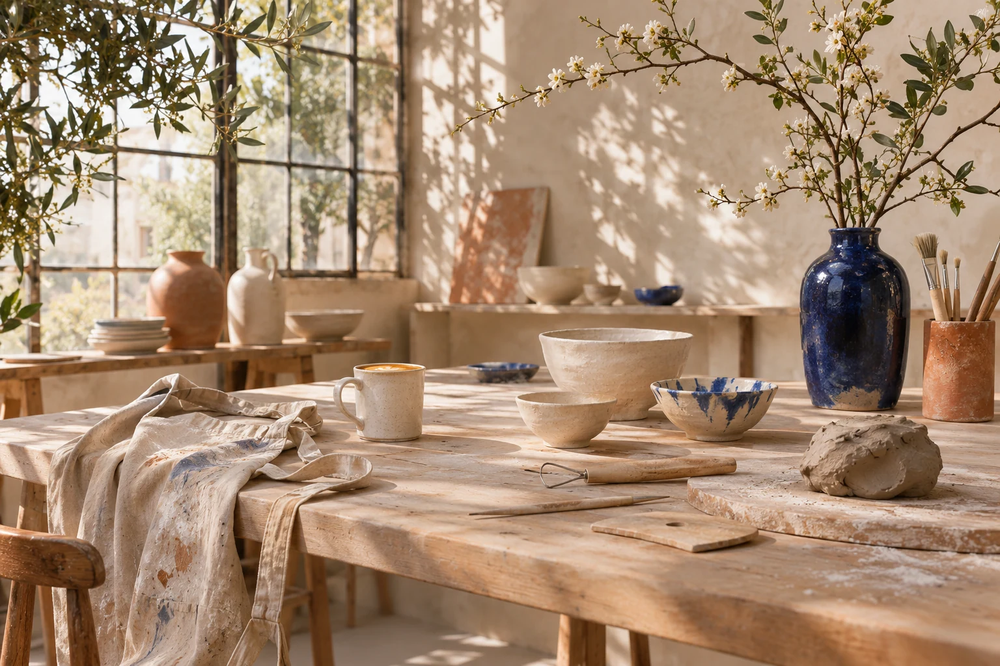
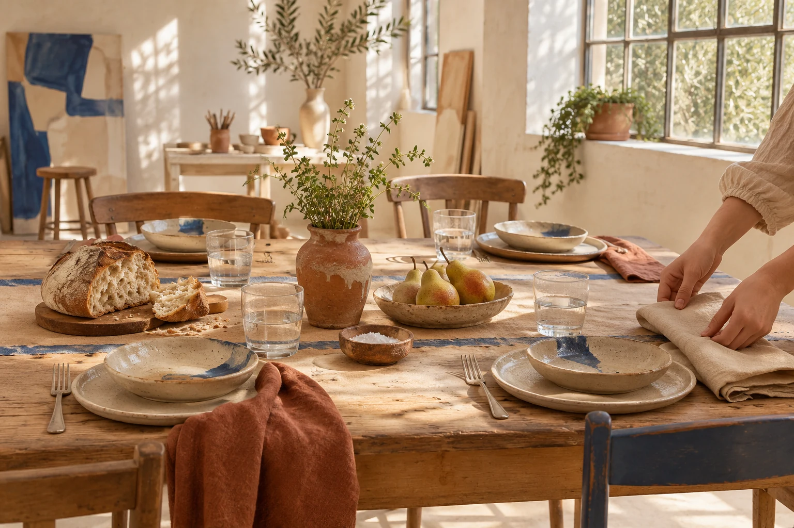

Make room
for making.
A morning away from the usual. Clay, ink, a shared table — and something to take home.
Find your workshopGood company.
No experience needed.

Come as you are.
Leave with something you made.
Small groups, thoughtful materials,
and a little space to try.
Pick your pause.
Three ways to spend a few good hours.
All materials and a warm welcome included.
Illustrative prices in USD, per person. Materials included. No added fees.

A space for
the in-between.
Bring a little curiosity to a few unhurried hours with clay, ink, flowers, and good company.
At our imagined studio, we keep the groups small, the kettle on, and the door open to first-timers. Everything you need is already on the table.
What should I bring?
Just yourself and clothes you don’t mind getting a little messy. Tools, materials, aprons, and refreshments are part of every illustrative session.
Can I come on my own?
Absolutely. These fictional workshops are designed for solo makers, friends, and anyone trying something for the first time.